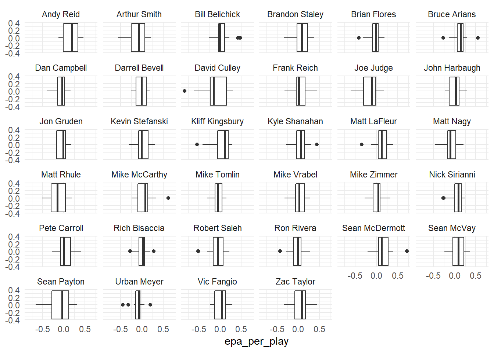
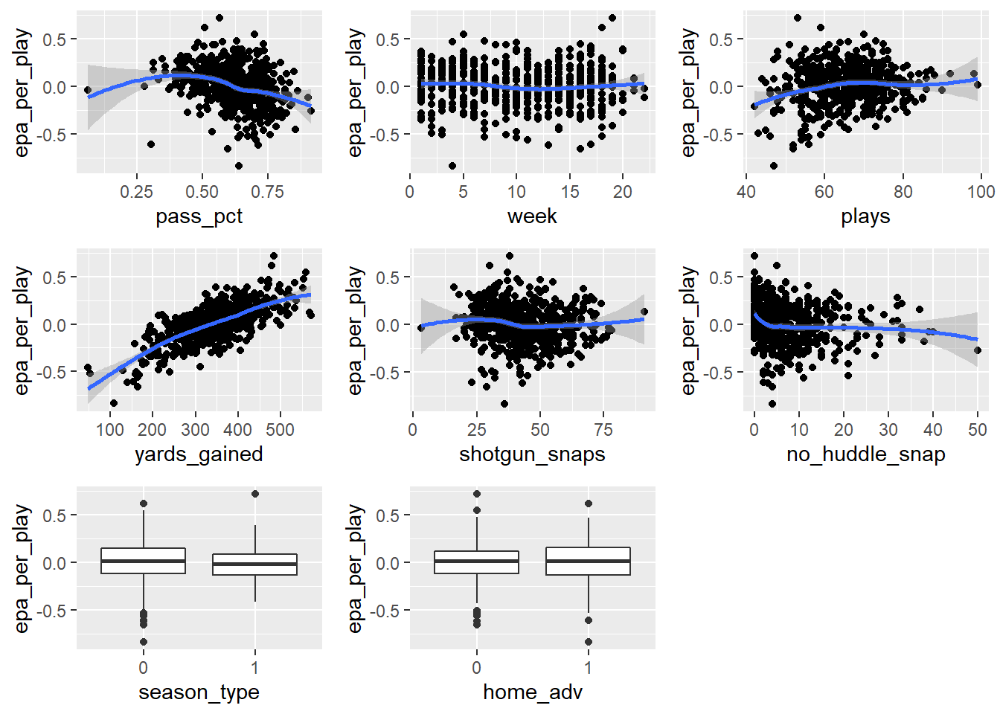

One of the assumptions of a linear regression model is that all of the observations are independent of each other. Linear Mixed-Effects Models can be used to model correlated data (Gałecki and Burzykowski 2013) which can take the form of cross sectional or longitudinal data. Cross sectional data feature individuals at level 1, nested in a geographical or social context, at level 2. While longitudinal data feature individuals, at level 2, measured over several occasions, at level 1 (Bell, Fairbrother, and Jones 2019). It is important to note that data can be nested in more than two levels based on the design and complexity of the study. For example, individuals may be grouped by region and measured over time. There would be three levels to this study.
Mixed-effects models are called “mixed” because they simultaneously model fixed and random effects. These effects account for the differing relationships between and within clusters(Bell, Fairbrother, and Jones 2019). Fixed effects model average trends, while random effects model the extent to which these trends vary across levels of some grouping factor (Brown 2021). Deciding whether an effect is fixed or random can be a challenge. When the number of clusters is small but the number of observations per cluster is large, we can model that parameter as a fixed effect. Conversely, random effects may have a large number of clusters but a relatively small number of observations per cluster (Demidenko 2013). It is important to include the random effects in the model as fixed effects only give a partial picture of the hierarchical data as they do not reveal information about level 2 entities. Valuable information is lost about the relationship between the clusters (Bell, Fairbrother, and Jones 2019).
Demidenko (2013) notes that in the classical approach, all observations are assumed to be independent and identically distributed, but this assumption can lead to false results for clustered data. Observations between clusters are assumed independent but observations between cluster are dependent as they belong to the same sub population. Mixed Effects Models can be seen as a combination of ANOVA, a fixed effects model, and VARCOMP, a random effects model.
Until more recently, the only way to handle the type of data mixed-effects model does was through repeated measures ANOVAs. Mixed-effects models are much more versatile in handling variability within and across groups and can handle missing data, providing much better results than the ANOVAs. (Brown 2021)
Brown (2021) gives a theoretical account of implementing mixed-effects models, and their commonalities and differences with ANOVA. They show that ANOVA cannot simultaneously take multiple sources of variation into account when observations are nested across participants, which lowers the ability to detect an effect. Mixed-effects modeling allows a researcher to examine the condition of interest while also considering variability within and across participants and items simultaneously and is a reasonable choice when ANOVA and multiple regression are not.
While linear mixed models are most effective for clustered data with a hierarchical structure or repeated measures, they are also well-suited for time-series data, biological/medical data, and modeling shapes/images (Demidenko 2013). The main application for mixed-effect models is in psychology due to the nature of their data and repeated observations across trial participants. However, the applications can extend into almost any field where the variability across a group/person is wanted in the analysis. One such example is the use of mixed-effects models on published health data sets to explore the link between smoking and depression in which it was found smoking status was associated with depression at almost 2 times the risk of non-smoking participants (Luger, Suls, and Vander Weg 2014).
The critical slope of mixed-effects models is often discussed in literature, finding failure to include the critical slope in the test of an interaction can yield very high Type I error rates (Barr 2013). “When testing interactions in mixed designs with replications, it is critical to include the random slope corresponding to the highest-order combination of within-subject factors subsumed by each interaction of interest” (Barr 2013).
After doing an extensive review of current literature, our group aims to gain an understanding of Linear Mixed-Effect Models in order to create our own models and better our understanding. To do so we will use NFL play-by-play data from the nflverse package available in R. In our case we wish to find association between a NFL coach and play performance on the field using the nflverse data set, where the coaches are the random effects.
Methods
The complex nature of mixed-effects models call into question the robustness of these models and brings more focus to the model assumptions. “Mixed-effects models involve complex fitting procedures and make several assumptions, in particular about the distribution of residual and random effects. Violations of these assumptions are common in real data sets, yet it is not always clear how much these violations matter to accurate and unbiased estimation” (Schielzeth et al. 2020). They go on to discuss the consequences of violations of these assumptions and the impact of missing random effect components on model estimates. The study found mixed-effects models to be very robust to violations of these assumptions, finding the estimates were unbiased (although imprecise) and missing random effect predictors had little effect on the fixed effect estimates but had systematic effects on the estimates of random effects (Schielzeth et al. 2020).
Many technical papers have delved into the formulation and implementation of linear mixed-effects models, many following the lead of Bates et al. paper, “Fitting linear mixed-effects models using lme4” (2014). Bates et al. (2014) outlines the creation and implementation of the lme4 package as an extension of lmer function, which has become the predominant tool in the R language for fitting linear mixed-effect models. As for most model-fitting functions in R, the model is described in an lmer call by a formula, in this case including both fixed- and random-effects terms (Bates et al. 2014). The paper describes the structure of the model, the steps in evaluating the profiled deviance or REML criterion, and the structure of classes or types that represents such a model (Bates et al. 2014). One of the more controversial design decisions of lme4 has been to omit the output of p values (these can be found using parametric bootstrapping functionality). “While the null distributions (and the sampling distributions of non-null estimates) are asymptotically normal, these distributions are not t distributed for finite size samples — nor are the corresponding null distributions of differences in scaled deviances F distributed.” (Bates et al. 2014). A common problem in mixed-model inference is the lack of analytical results for parameter estimates in complex situations including unbalanced or crossed designs. (Bates et al. 2014)\(W_n(x)\) is the sum of weights that belongs to all real numbers. Weights are positive numbers and small if \(X_i\) is far from \(x\).
Just as a linear model is described by the distribution of a vector-valued random response variable, Y, whose observed value is \(y_{obs}\), a linear mixed model is described by the distribution of two vector-valued random variables: \(Y\), the response, and \(\beta\), the vector of random effects. In a linear model the distribution of Y is multivariate normal,
\[
Y ∼ N(Xβ + o, σ^2 W^{-1})
\]
Our basic model: \[epa = plays + (1+plays|coach)\]
Analysis and Results
Data
Our data featured a play by play analysis for every game in the 2021 season. We are attempting to model the coaches effect using the EPA. We first decided to aggregate the data by game and team. We are assuming that all plays are rush or pass and will be using the pass percentage (pass_pct) to model the two different play options per game. After summarizing, we end up with the following table.
Variable
Meaning
pbp.posteam
the team with possession of the ball (offense)
pbp.posteam_type
specifies if the possessing team is home or away
pbp.game_id
the specific game id from the NFL
week
week number in the season that the game was played
season_type
flag that specifies if it is a regular (0) or post (1) season game
home_adv
flag that specifies home (0) or away(1)
coach
the coach of the team with possession (offensive plays)
opp_coach
the coach of the opposing team (defensive plays)
plays
total number of rush and pass plays given the team and game
pass_plays
number of pass plays given the team and game
pass_pct
the percentage of pass plays in the game calculated by pass_plays/plays
yards_gained
yards gained by an offense
shotgun_snaps
number of snaps a team lined up in a shotgun formation
ho_huddle_snaps
number of snaps a team used a no huddle offense
EPA_per_play
the mean of all pass and rush plays given team and game
Here is the summary of the variables we are choosing to model coach effectiveness.
Code
#generate a summary of each of the features of our data set#replace this section with histograms (or other viz) for numerical datasummary(team_sum2)
pbp.posteam pbp.posteam_type pbp.game_id week
Length:570 Length:570 Length:570 Min. : 1.000
Class :character Class :character Class :character 1st Qu.: 5.000
Mode :character Mode :character Mode :character Median :10.000
Mean : 9.958
3rd Qu.:15.000
Max. :22.000
season_type home_adv coach opp_coach
Min. :0.00000 Min. :0.0 Length:570 Length:570
1st Qu.:0.00000 1st Qu.:0.0 Class :character Class :character
Median :0.00000 Median :0.5 Mode :character Mode :character
Mean :0.04561 Mean :0.5
3rd Qu.:0.00000 3rd Qu.:1.0
Max. :1.00000 Max. :1.0
plays pass_plays pass_pct yards_gained
Min. :42.00 Min. : 3.00 Min. :0.0625 Min. : 47.0
1st Qu.:59.00 1st Qu.:34.00 1st Qu.:0.5538 1st Qu.:290.0
Median :65.00 Median :40.00 Median :0.6299 Median :348.0
Mean :65.17 Mean :40.44 Mean :0.6194 Mean :344.1
3rd Qu.:71.00 3rd Qu.:46.00 3rd Qu.:0.6971 3rd Qu.:399.0
Max. :99.00 Max. :71.00 Max. :0.9138 Max. :571.0
NA's :34
shotgun_snaps no_huddle_snap epa_per_play
Min. : 3.00 Min. : 0.000 Min. :-0.840000
1st Qu.:34.00 1st Qu.: 2.000 1st Qu.:-0.120000
Median :42.00 Median : 5.000 Median : 0.020000
Mean :43.38 Mean : 7.047 Mean : 0.007772
3rd Qu.:52.00 3rd Qu.:10.000 3rd Qu.: 0.140000
Max. :91.00 Max. :50.000 Max. : 0.720000
Visualization
Our first graph shows that there is a difference in EPA per play for each team. Our model will attempt to find the coaches effect on these differences.
The second set of plots shows us the EPA by coach. We can see that there is a difference in expected points per play based on the coach.
Code
# Compare EPA by coachggplot(team_sum2, aes(epa_per_play)) +geom_boxplot() +facet_wrap(~ coach) +theme_minimal()

This third set of plots models each of our features against our EPA to see if any patterns exist.
Code
# plot each variable against epa to see if any patterns exist p1 <-ggplot(team_sum2, aes(x=pass_pct, y=epa_per_play)) +geom_point() +geom_smooth(method ="loess")p2 <-ggplot(team_sum2,aes(x=week, y=epa_per_play)) +geom_point() +geom_smooth(method ="loess")p3 <-ggplot(team_sum2, aes(x=plays, y=epa_per_play)) +geom_point() +geom_smooth(method ="loess")p4 <- team_sum2 |>ggplot(aes(y=epa_per_play, x=yards_gained)) +geom_point() +geom_smooth(method ="loess")p5 <- team_sum2 |>ggplot(aes(y=epa_per_play, x=shotgun_snaps)) +geom_point() +geom_smooth(method ="loess")p6 <- team_sum2 |>ggplot(aes(y=epa_per_play, x=no_huddle_snap)) +geom_point() +geom_smooth(method ="loess")team_sum2$season_type <-as.factor(team_sum2$season_type)team_sum2$home_adv <-as.factor(team_sum2$home_adv)p7 <-ggplot(team_sum2,aes(x=season_type, y=epa_per_play)) +geom_boxplot()p8 <-ggplot(team_sum2, aes(home_adv, epa_per_play)) +geom_boxplot()# arrange visualizations in a gridgrid.arrange(p1, p2, p3, p4, p5, p6, p7, p8)

Statistical Modeling
We begin modeling by testing our assumptions using a linear model.
Code
# create linear model to test assumptionsepa.lm =lm(epa_per_play ~ pass_pct + plays + yards_gained + shotgun_snaps + no_huddle_snap, data=team_sum2)summary(epa.lm)
Call:
lm(formula = epa_per_play ~ pass_pct + plays + yards_gained +
shotgun_snaps + no_huddle_snap, data = team_sum2)
Residuals:
Min 1Q Median 3Q Max
-0.47720 -0.07899 0.00753 0.08871 0.35041
Coefficients:
Estimate Std. Error t value Pr(>|t|)
(Intercept) -6.873e-02 5.403e-02 -1.272 0.204
pass_pct -3.627e-01 5.907e-02 -6.139 1.63e-09 ***
plays -6.159e-03 8.583e-04 -7.176 2.44e-12 ***
yards_gained 2.024e-03 7.539e-05 26.842 < 2e-16 ***
shotgun_snaps 4.161e-04 6.035e-04 0.689 0.491
no_huddle_snap -2.163e-03 8.125e-04 -2.662 0.008 **
---
Signif. codes: 0 '***' 0.001 '**' 0.01 '*' 0.05 '.' 0.1 ' ' 1
Residual standard error: 0.1254 on 530 degrees of freedom
(34 observations deleted due to missingness)
Multiple R-squared: 0.6302, Adjusted R-squared: 0.6267
F-statistic: 180.7 on 5 and 530 DF, p-value: < 2.2e-16
We found that the number of shotgun snaps an offense runs does not appear to significantly effect EPA per play. This model explains approximately 63% of the variance in EPA per play.
Code
autoplot(epa.lm)
While there are a few outliers present, we concluded that the overall fit for the selected variables is acceptable. We now want to account for a team’s coach and if a team has home field advantage as random effects.
Code
# LMM - random interceptsepa.lmer1 =lmer(epa_per_play ~ pass_pct + plays + yards_gained + no_huddle_snap +(1|coach) + (1|home_adv), data=team_sum2)epa.lmer1
Linear mixed model fit by REML ['lmerModLmerTest']
Formula: epa_per_play ~ pass_pct + plays + yards_gained + no_huddle_snap +
(1 | coach) + (1 | home_adv)
Data: team_sum2
REML criterion at convergence: -657.5259
Random effects:
Groups Name Std.Dev.
coach (Intercept) 0.02138
home_adv (Intercept) 0.00000
Residual 0.12358
Number of obs: 536, groups: coach, 34; home_adv, 2
Fixed Effects:
(Intercept) pass_pct plays yards_gained no_huddle_snap
-0.065738 -0.360035 -0.005792 0.001993 -0.002185
optimizer (nloptwrap) convergence code: 0 (OK) ; 0 optimizer warnings; 1 lme4 warnings
The home advantage random effect approaches zero, so we conclude there is no additional change in EPA per play due to home field advantage itself. However, we observe an additional 0.02 EPA per play due to coaching
Code
coef(epa.lmer1)
$coach
(Intercept) pass_pct plays yards_gained no_huddle_snap
Andy Reid -0.04320522 -0.3600351 -0.005791862 0.001992788 -0.002184533
Arthur Smith -0.07545211 -0.3600351 -0.005791862 0.001992788 -0.002184533
Bill Belichick -0.06125237 -0.3600351 -0.005791862 0.001992788 -0.002184533
Brandon Staley -0.05998892 -0.3600351 -0.005791862 0.001992788 -0.002184533
Brian Flores -0.04802109 -0.3600351 -0.005791862 0.001992788 -0.002184533
Bruce Arians -0.04782538 -0.3600351 -0.005791862 0.001992788 -0.002184533
Dan Campbell -0.07769279 -0.3600351 -0.005791862 0.001992788 -0.002184533
Darrell Bevell -0.06463750 -0.3600351 -0.005791862 0.001992788 -0.002184533
David Culley -0.08170016 -0.3600351 -0.005791862 0.001992788 -0.002184533
Frank Reich -0.06182493 -0.3600351 -0.005791862 0.001992788 -0.002184533
Joe Judge -0.06773172 -0.3600351 -0.005791862 0.001992788 -0.002184533
John Harbaugh -0.07460723 -0.3600351 -0.005791862 0.001992788 -0.002184533
Jon Gruden -0.07307754 -0.3600351 -0.005791862 0.001992788 -0.002184533
Kevin Stefanski -0.06918734 -0.3600351 -0.005791862 0.001992788 -0.002184533
Kliff Kingsbury -0.05564862 -0.3600351 -0.005791862 0.001992788 -0.002184533
Kyle Shanahan -0.08706086 -0.3600351 -0.005791862 0.001992788 -0.002184533
Matt LaFleur -0.04161529 -0.3600351 -0.005791862 0.001992788 -0.002184533
Matt Nagy -0.07627911 -0.3600351 -0.005791862 0.001992788 -0.002184533
Matt Rhule -0.07697774 -0.3600351 -0.005791862 0.001992788 -0.002184533
Mike McCarthy -0.06800655 -0.3600351 -0.005791862 0.001992788 -0.002184533
Mike Tomlin -0.05067471 -0.3600351 -0.005791862 0.001992788 -0.002184533
Mike Vrabel -0.06455181 -0.3600351 -0.005791862 0.001992788 -0.002184533
Mike Zimmer -0.07799479 -0.3600351 -0.005791862 0.001992788 -0.002184533
Nick Sirianni -0.06563687 -0.3600351 -0.005791862 0.001992788 -0.002184533
Pete Carroll -0.05485163 -0.3600351 -0.005791862 0.001992788 -0.002184533
Rich Bisaccia -0.07533029 -0.3600351 -0.005791862 0.001992788 -0.002184533
Robert Saleh -0.07004850 -0.3600351 -0.005791862 0.001992788 -0.002184533
Ron Rivera -0.07123896 -0.3600351 -0.005791862 0.001992788 -0.002184533
Sean McDermott -0.04492282 -0.3600351 -0.005791862 0.001992788 -0.002184533
Sean McVay -0.06487735 -0.3600351 -0.005791862 0.001992788 -0.002184533
Sean Payton -0.08293789 -0.3600351 -0.005791862 0.001992788 -0.002184533
Urban Meyer -0.06971178 -0.3600351 -0.005791862 0.001992788 -0.002184533
Vic Fangio -0.06030615 -0.3600351 -0.005791862 0.001992788 -0.002184533
Zac Taylor -0.07022429 -0.3600351 -0.005791862 0.001992788 -0.002184533
$home_adv
(Intercept) pass_pct plays yards_gained no_huddle_snap
0 -0.06573825 -0.3600351 -0.005791862 0.001992788 -0.002184533
1 -0.06573825 -0.3600351 -0.005791862 0.001992788 -0.002184533
attr(,"class")
[1] "coef.mer"
Each coach is assigned a different intercept, but the fixed effects are the same for all coaches. This model is called a Random Intercept model; we are accounting for baseline differences in EPA per play. Alternatively, in a Random Slope model, each coach is allowed to have a different intercept, as well as different slopes for the effect of number of plays ran and percentage of pass plays, etc. We implement a Random Slope model below:
$coach
(Intercept) pass_pct plays yards_gained shotgun_snaps
Andy Reid 0.006728102 -0.3722720 -0.005903043 0.001981324 1.643708e-04
Arthur Smith -0.023457725 -0.4163653 -0.005069429 0.002304498 -3.061528e-04
Bill Belichick -0.140352195 -0.3184948 -0.005569778 0.002082485 2.021416e-03
Brandon Staley -0.033920695 -0.3747068 -0.005216834 0.001901461 9.572888e-04
Brian Flores 0.002506320 -0.3522986 -0.005979379 0.001797215 5.451766e-04
Bruce Arians 0.052625347 -0.3654553 -0.005339229 0.002170506 -2.141573e-03
Dan Campbell -0.032633593 -0.4078123 -0.005069111 0.002024292 3.117033e-04
Darrell Bevell -0.015657333 -0.3896159 -0.004847335 0.002069363 1.089954e-04
David Culley 0.063837649 -0.4540726 -0.005290452 0.002363655 -8.149542e-04
Frank Reich -0.025375148 -0.3901127 -0.004961856 0.001921123 8.116697e-04
Joe Judge -0.178672995 -0.3502147 -0.005309498 0.002136269 2.272439e-03
John Harbaugh -0.085785257 -0.3705963 -0.005485294 0.001687278 2.533594e-04
Jon Gruden -0.065387302 -0.4016475 -0.006154771 0.001682994 -8.681434e-04
Kevin Stefanski -0.068462398 -0.3889952 -0.005997136 0.001684096 4.496838e-04
Kliff Kingsbury 0.051739732 -0.4048163 -0.004771162 0.002124108 2.616412e-03
Kyle Shanahan -0.092695066 -0.4018564 -0.004872697 0.001967280 -7.448583e-04
Matt LaFleur 0.009175643 -0.3892986 -0.006130100 0.001926008 -2.117968e-03
Matt Nagy -0.012257161 -0.4602187 -0.005191404 0.001789964 -2.279178e-04
Matt Rhule -0.027027035 -0.4215012 -0.005008515 0.002083713 7.042946e-04
Mike McCarthy -0.050779149 -0.3789256 -0.006218571 0.001894948 -7.706345e-04
Mike Tomlin -0.000739052 -0.3588243 -0.005649494 0.001647816 -1.357040e-04
Mike Vrabel -0.092176195 -0.3681597 -0.005167046 0.001774901 8.072048e-04
Mike Zimmer -0.044902009 -0.4054232 -0.005807989 0.001576495 6.930357e-04
Nick Sirianni 0.026657081 -0.3971460 -0.006063984 0.001597985 -8.912411e-04
Pete Carroll -0.010958598 -0.3705593 -0.005734104 0.001799123 -8.468388e-04
Rich Bisaccia -0.087976366 -0.3991398 -0.005000101 0.001939447 1.351791e-03
Robert Saleh -0.060129840 -0.3864619 -0.006329958 0.001930776 -4.410997e-04
Ron Rivera -0.014025074 -0.4086765 -0.005228427 0.002043236 -7.844644e-05
Sean McDermott -0.014575366 -0.3530997 -0.006428880 0.002164647 1.196181e-03
Sean McVay -0.080704890 -0.3672137 -0.006432359 0.001839938 1.301721e-04
Sean Payton 0.017636375 -0.4697251 -0.004587776 0.002273799 -1.316270e-03
Urban Meyer -0.098298356 -0.3945568 -0.006070095 0.001652765 -3.788461e-04
Vic Fangio -0.054760804 -0.3936710 -0.005953839 0.001849059 -1.336985e-03
Zac Taylor -0.001455182 -0.4349757 -0.005740040 0.001874798 -2.737028e-03
no_huddle_snap
Andy Reid -0.0058093563
Arthur Smith -0.0058624367
Bill Belichick -0.0048304130
Brandon Staley -0.0044107145
Brian Flores -0.0010453179
Bruce Arians 0.0001820800
Dan Campbell -0.0010163447
Darrell Bevell -0.0032434967
David Culley -0.0036796230
Frank Reich -0.0045399996
Joe Judge 0.0009341072
John Harbaugh 0.0004770374
Jon Gruden -0.0023511710
Kevin Stefanski -0.0028770576
Kliff Kingsbury -0.0035707260
Kyle Shanahan 0.0008943490
Matt LaFleur -0.0067799681
Matt Nagy -0.0071003834
Matt Rhule -0.0034785858
Mike McCarthy -0.0006280615
Mike Tomlin -0.0038637422
Mike Vrabel -0.0070569422
Mike Zimmer -0.0022987409
Nick Sirianni -0.0011921270
Pete Carroll -0.0022896070
Rich Bisaccia -0.0034292690
Robert Saleh -0.0005199952
Ron Rivera -0.0023886547
Sean McDermott -0.0067992828
Sean McVay -0.0042224858
Sean Payton -0.0028031571
Urban Meyer -0.0032220211
Vic Fangio -0.0039772236
Zac Taylor -0.0023049594
attr(,"class")
[1] "coef.mer"
This model expects different baseline levels of plays ran and pass_pct. Despite the individual variation of pass_pct, all the values are negative and very close to each other. We see consistency with how often coaches throw the ball. The variation in number of shotgun snaps an offense runs is much wider.
Code
# Testing for significance between models with and without home field advantageepa.lmer2.null =lmer(epa_per_play ~ pass_pct + plays + yards_gained + shotgun_snaps + no_huddle_snap + (1+pass_pct|coach) + (1+plays|coach) + (1+yards_gained|coach) + (1+shotgun_snaps|coach) + (1+no_huddle_snap|coach), data=team_sum2,REML=FALSE)epa.lmer2.full =lmer(epa_per_play ~ home_adv + pass_pct + plays + yards_gained + shotgun_snaps + no_huddle_snap + (1+home_adv|coach) + (1+pass_pct|coach) + (1+plays|coach) + (1+yards_gained|coach) + (1+shotgun_snaps|coach) + (1+no_huddle_snap|coach), data=team_sum2,REML=FALSE)anova(epa.lmer2.full, epa.lmer2.null)
intercepts2 <-rep(coef(epa.lmer3f)$coach[,1], each =16)slopes <-rep(coef(epa.lmer3f)$coach[,2], each =16)model_intercept <-as.numeric(fixef(epa.lmer3f)[1])model_slope <-as.numeric(fixef(epa.lmer3f)[2])ggplot(team_sum2f, aes(x = plays, y = epa_per_play, color=home_adv)) +geom_abline(slope = model_slope, intercept = model_intercept, linetype ="solid", color ="black", size =1) +geom_abline(mapping =aes(slope = slopes, intercept = intercepts2, linetype = coach), linetype ="dashed", size = .4, color="grey70") +geom_point(aes(color=home_adv), size =1, color ="grey70") +geom_segment(aes(x = plays, xend = plays, y = epa_per_play, yend =fitted(epa.lmer3f)), ) +theme(panel.background =element_blank(), panel.grid.major =element_blank(),panel.grid.minor =element_blank(),panel.border =element_rect(colour ="black", fill =NA),legend.position ="right", axis.text =element_text(size =14),axis.title =element_text(size =14)) +labs (x ="Plays", y ="Epa Per Play")
Conclusion
Using a linear mixed-effects model, we are able to find the additional effect a team’s coach has on the offenses success, measured by EPA per play. After accounting for the fixed effects plays ran, percentage of pass plays, yards gained, shotgun snaps, and no huddle snaps, our random effect coefficient for coaching showed an additional change 0.02 EPA per play due to coaching and no change in EPA per play due to home field advantage.
References
Barr, Dale J. 2013. “Random Effects Structure for Testing Interactions in Linear Mixed-Effects Models.”Frontiers in Psychology. Frontiers Media SA.
Bates, Douglas, Martin Mächler, Ben Bolker, and Steve Walker. 2014. “Fitting Linear Mixed-Effects Models Using Lme4.”arXiv Preprint arXiv:1406.5823.
Bell, Andrew, Malcolm Fairbrother, and Kelvyn Jones. 2019. “Fixed and Random Effects Models: Making an Informed Choice.”Qual Quant 53: 1051–74. https://doi.org/10.1007/s11135-018-0802-x.
Brown, Violet A. 2021. “An Introduction to Linear Mixed-Effects Modeling in r.”Advances in Methods and Practices in Psychological Science 4 (1): 2515245920960351.
Demidenko, Eugene. 2013. Mixed Models: Theory and Applications with r. 2nd ed. Hoboken, New Jersey: John Wiley & Sons, Inc.
Gałecki, Andrzej, and Tomasz Burzykowski. 2013. Linear Mixed-Effects Models Using r: A Step-by-Step Approach. New York, NY: Springer Science+Business Media. https://doi.org/10.1007/978-1-4614-3900-4 .
Luger, Tana M, Jerry Suls, and Mark W Vander Weg. 2014. “How Robust Is the Association Between Smoking and Depression in Adults? A Meta-Analysis Using Linear Mixed-Effects Models.”Addictive Behaviors 39 (10): 1418–29.
Schielzeth, Holger, Niels J Dingemanse, Shinichi Nakagawa, David F Westneat, Hassen Allegue, Céline Teplitsky, Denis Réale, Ned A Dochtermann, László Zsolt Garamszegi, and Yimen G Araya-Ajoy. 2020. “Robustness of Linear Mixed-Effects Models to Violations of Distributional Assumptions.”Methods in Ecology and Evolution 11 (9): 1141–52.